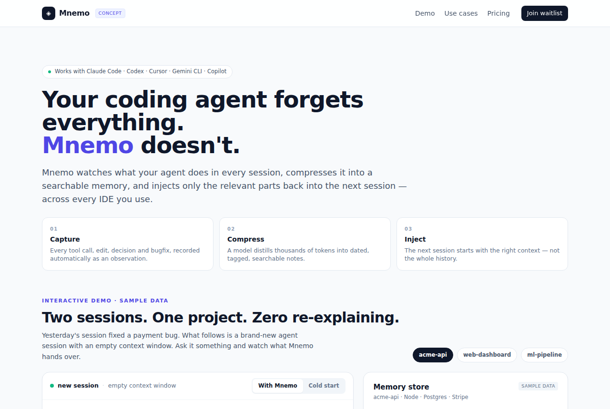

claude-mem：给AI编程助手装长期记忆
thedotmack/claude-mem · AI基础设施Apache-2.0⭐ 106,116

thedotmack/claude-mem 是一个给 AI 编程助手做“长期记忆”的开源项目。按 README 的说法，它在会话中捕获 agent 的工具调用和观察，用 AI 压缩成语义摘要，并在后续会话里把相关上下文注入回去，让 Claude 不再每次都“失忆”。它自称支持 Claude Code、OpenCode、Codex、Gemini、Copilot 等多个工具，License 是 Apache-2.0。
它最近火得有点夸张：约 10 万星，近期每天涨约 1400 星。原因是“跨会话记忆”确实是重度 AI 编程用户的高频痛点——每次重开终端都要重新解释项目背景，谁用谁烦。
但如果做成产品，机会要谨慎看。作者已经在做官方商业化（claude-mem.ai、CMEM Pro 托管、30 天免费试用），安装器会引导邮箱登录、默认走托管记忆。也就是说，最顺的“托管记忆层 + 订阅”路径已经被原作者占了。第三方能做的差异点不多：要么做跨工具的统一记忆层并主打本地/私有部署，要么做记忆的审计、清理和合规（代码和会话数据上云在美国市场是实打实的隐私问题）。从 README 看，它的信息密度高但质量参差、语言列表和注释不太规范，说明工程细节还有缝，但不足以支撑一个独立产品。
一句话：适合写进日报让读者了解趋势，不太适合拿来二次包装创业。
今日 Top 5
| # | 项目 | 传播 | 创业 | 综合 |
|---|---|---|---|---|
| 1 | thedotmack/claude-mem | 7.67 | 7.0 | 7.5 |
| 2 | heydamir/unslop | 8.0 | 6.7 | 7.43 |
| 3 | jhaizhou-ops/d2r-mobile | 8.67 | 6.4 | 7.25 |
| 4 | qybaihe/bla | 7.67 | 6.5 | 7.01 |
| 5 | affaan-m/ECC | 7.0 | 7.15 | 6.99 |